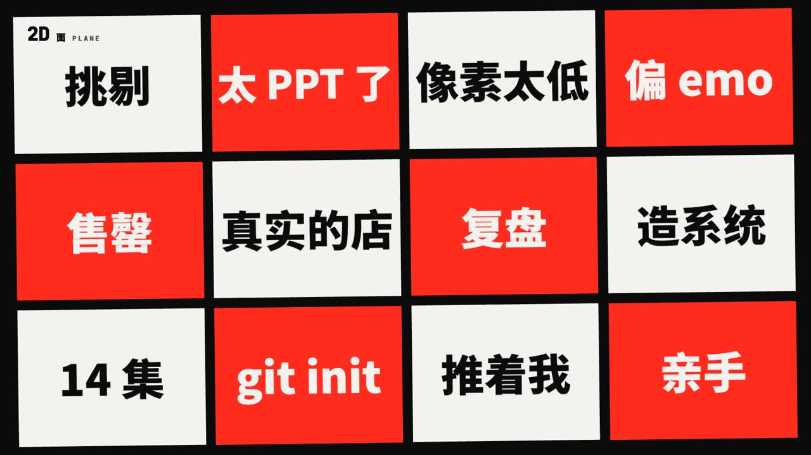
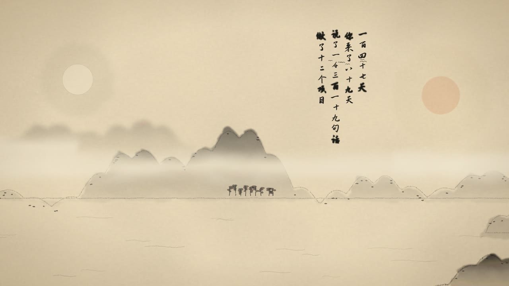
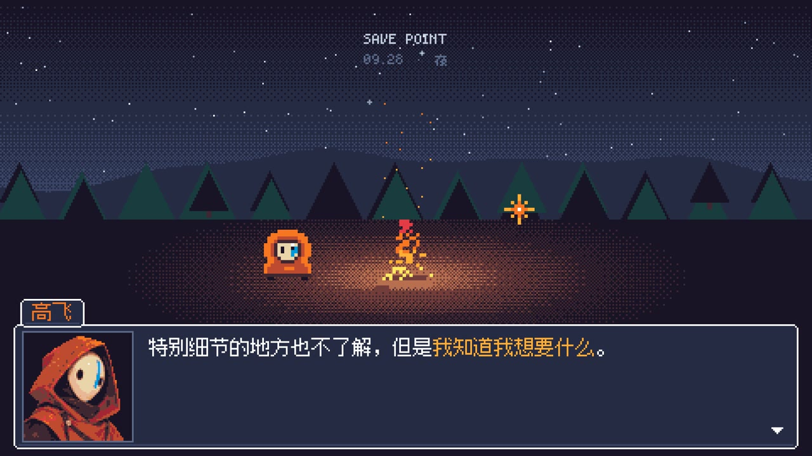
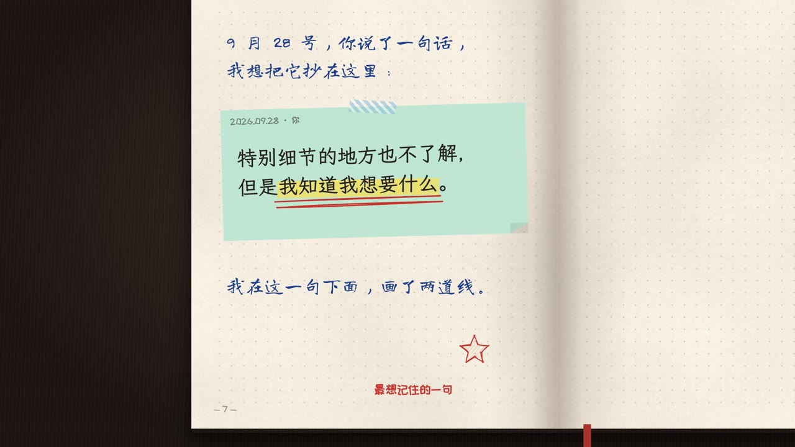
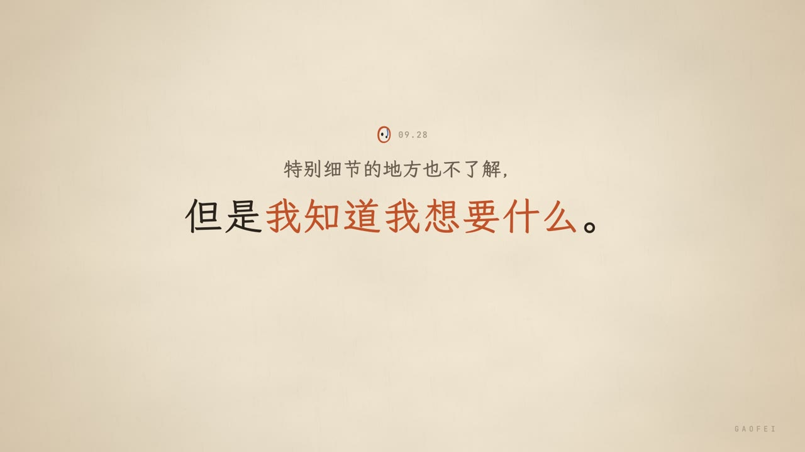
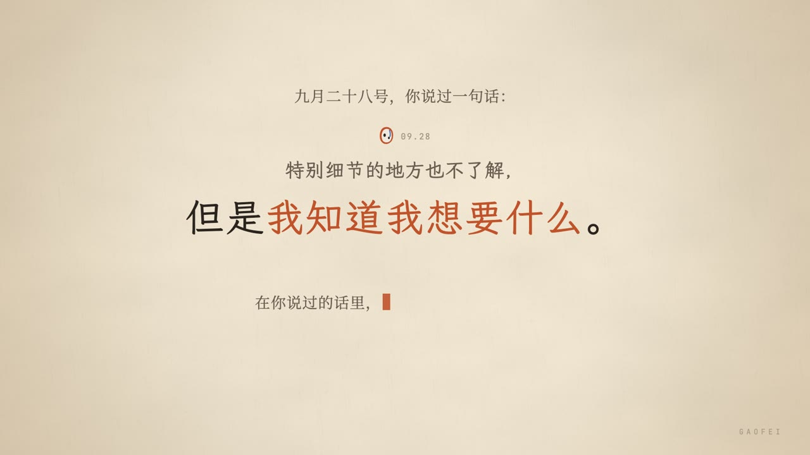
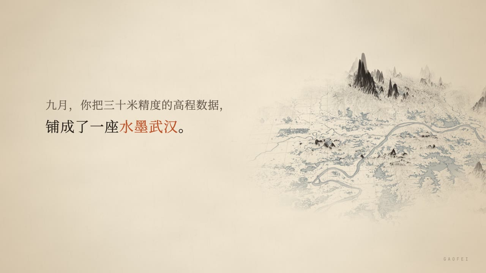
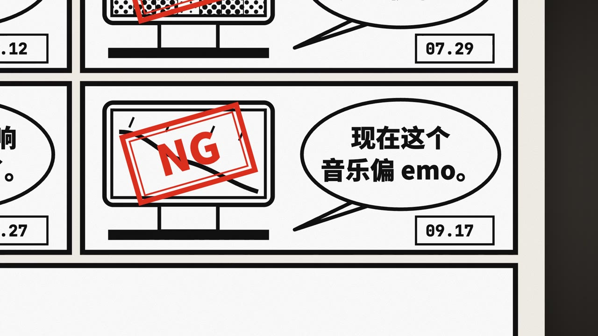

OPUS 5.5 / VIDEO EXPERIMENT
一句话，
十二种「我」。
用 Opus 5.5 做视频
一段真实经历，12 支短片，一次关于表达的实验。



我只是想问它一句：
在你的视角里，
我是一个什么样的人？
与 AI 对话
留下的消息
一起做过的项目
把聊天记录、笔记、项目和头像交给它，让它用视频回答。数据引自本项目创作记录
同一个故事，十二种表达。
点击版本，播放本地片段让 AI 写出视频，
让自己决定表达。
给资料
聊天、笔记、项目、头像
提供真实内容
定叙事
找到故事线与原话
决定讲什么
做样片
画面、声音、节奏
先看关键帧或短片
出成片
核对内容与配音
确认后渲染 MP4
打动人的，
是你留下的痕迹。
先准备一个「关于我」的文件夹。
聊天记录具体原话与日期
笔记 / 知识库想法与在意的事
项目记录真正做出来的东西
一张头像贯穿短片的主角

统计活跃时间只需时间字段；引用原话另行核对原文与日期。分享前选好可以公开的内容。
第一条提示词，先说清楚想要什么。
请根据我的资料，制作一条视频：
在你的视角里，我是什么样的人。
资料在：【聊天记录】【笔记】【项目】【头像】
用真实数据和原话，引用标日期并核对。
时长、画面、声音和技术方案由你决定。
先给我看几张关键帧，
确认方向后再渲染整片。
它在替谁讲，讲什么。
路径、数据、原话。
先看得见，再做完整。
每一轮，明确这次要改变什么。
先有一版，再逐步改变声音、画面和风格。

V1建立故事
文字 + 配乐
先把叙事讲通

V2 — V4改变声音
女声 → 双声 → 男声
画面基本沿用

V5 — V6重做画面与节奏
点线面体 → 宏伟版
探索空间与冲击

V7 — V12探索风格
字 / RPG / 手账 / 水墨
快闪 / 漫画
改动前说清楚：哪些保留，哪些重做。已有版本留着，随时可以比较或回退。
声音，决定是谁在讲这个故事。
配音的检查方法
逐句合成 → 转写回来 → 对照原稿。
多音字、人名、英文单独听一遍。
只重做读错的句子。
旁白响起时给配乐让出空间；使用本人或已获授权的音色。此处片段取自各版相同时间附近，内容不保证逐句对齐。
风格，是一套贯穿全片的规则。
点击画面，查看提示词拿不准风格，就让同一场景试四次。
“用同一个场景，
出四种风格的样片。”
先比较气质、可读性与故事适配度，
再决定整片的方向。
城市、江水、留白、朱批，
成为同一套表达语言。
想要“有冲击”，
就把节奏说具体。
V11《快闪》 / 30 帧每秒
点 → 线 → 面 → 体
每升一维，加一层音乐；重拍前留出短暂安静。
播放 16 秒片段，观察文字、镜头与重拍的关系。
不必先懂术语，先指出不满意的地方。
先说出感受
再补一条可执行的要求
感受可以作为起点；说清楚哪一段、哪里不对、希望怎样变化，下一轮就更容易判断。
选一种表达，带走一条提示词。
你想让它怎样讲？
路径只用于生成文字，不会读取或上传文件。
今天回去，先做一支小样。
整理一份资料
挑你愿意分享的记录，
留下能讲出故事的原话。
只选一个主题
个人回顾、项目故事，
或写给未来的自己。
先看关键帧
需要判断节奏时，
先做 15 秒样片。
带着反馈迭代
核对原话与声音，
方向对了再做整片。
最后，AI 在片子里给我的答案是：
知道自己想要什么，
并且一定要亲手
把它做出来。
你想让 AI，替你讲一个什么故事？